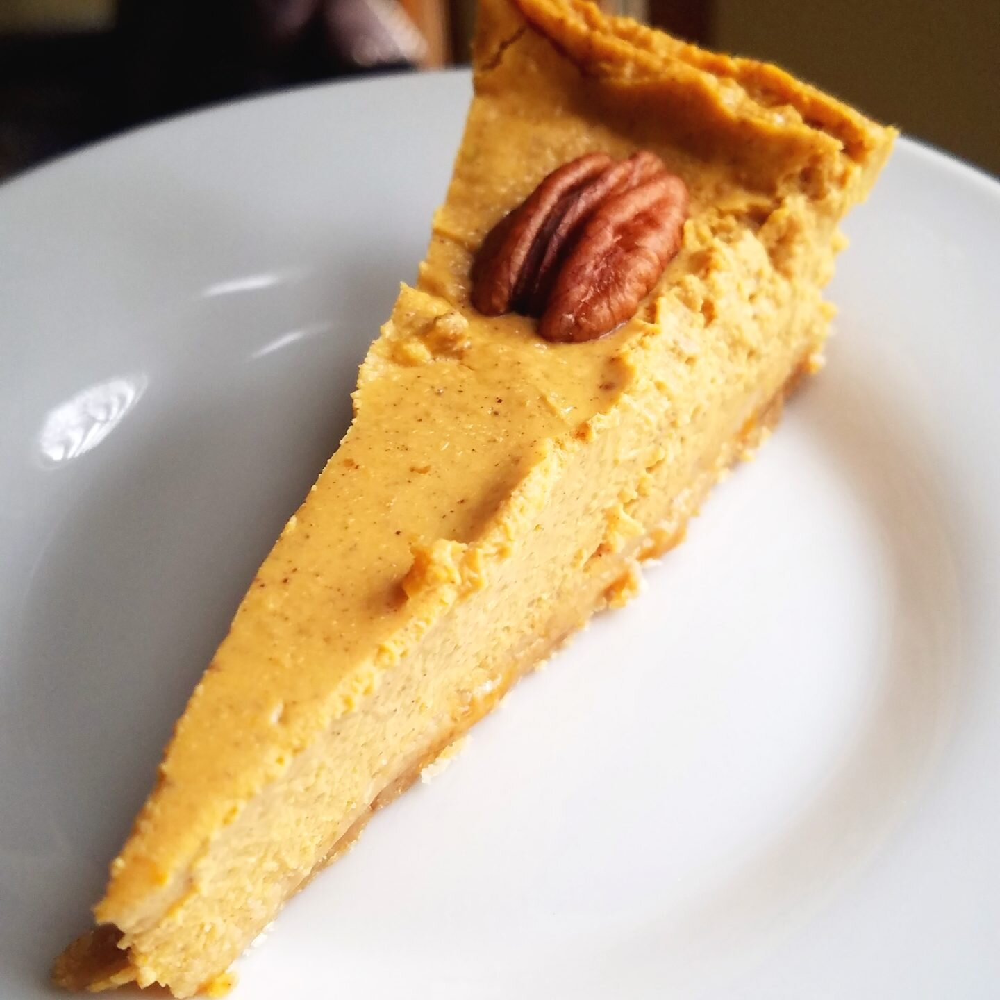
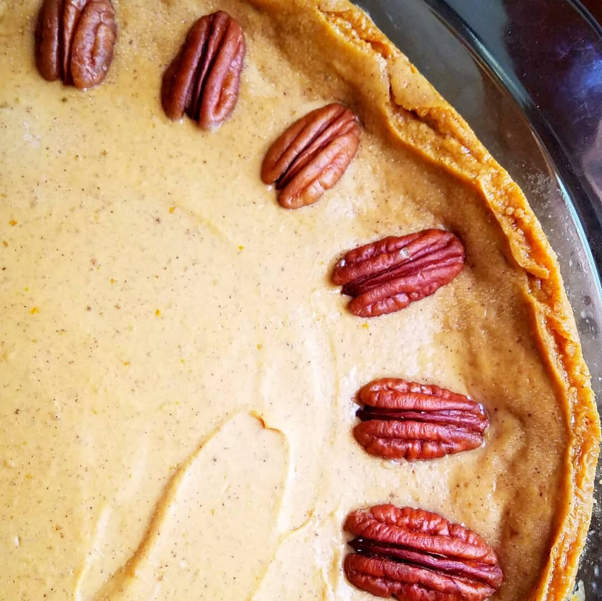

Vegan Pumpkin Cheesecake


What a great holiday season it's been so far! Between Thanksgiving, Nick's birthday, Christmas, our anniversary, and New Year's, this month is packed full of special events and massive blessings. One of the best parts is all the good food there is! I love being able to bring delicious foods such as this vegan pumpkin cheesecake to events for family and friends. This vegan pumpkin cheesecake was a massive hit for vegans and non-vegans alike. It is creamy, indulgent, and doesn't use any cashews!
I am not a fan of vegan cheesecakes that use mainly cashews. Sure, it's tasty, but it's not my personal preference. When I need a cheesecake recipe, I need it to be creamy and cheesy. I had the most amazing pumpkin cheesecake up in Syracuse at Strong Hearts Café back in October. Ever since then I've been yearning for more. It was the first vegan cheesecake I've had where I could say "yep....that's a spot-on substitution as a vegan" without anything lacking or being mediocre. I have to say that my recipe matches that result.
This vegan pumpkin cheesecake has the perfect creamy texture matched by a noticeable but not overwhelming pumpkin spice flavor. The crust is made of graham crackers that balances out the sweet, creamy cheesecake filling. This recipe will yield 8 sizable pieces, or it can be stretched to serve 16. Try it out and let me know what your friends and family think!!
Vegan Pumpkin Cheesecake
Serves: 8-16
Crust
-
6 oz vegan graham crackers (~48 crackers)
-
3 TBSP vegan butter, melted
-
1/4 cup brown sugar
Filling
-
2, 8 oz containers Tofutti cream cheese
-
1 can pumpkin puree
-
1 cup brown sugar
-
1/4 cup sugar
-
1 TBSP vegan butter, melted
-
1 TBSP pumpkin spice
-
2 tsp lemon juice
-
1 tsp vanilla extract
-
1/2 tsp salt
-
1 TBSP egg replacer (or cornstarch) mixed in 1/4 cup water
-
16 pecan halves, for topping (optional)
Preheat the oven to 325F. In a food processor, pulse the graham crackers to a crumb. Add the butter and brown sugar and pulse to combine.
Spray a cheesecake pan or pie pan with nonstick spray. Press the graham crumb mixture into the base of the baking dish.
In a food processor or blender, combine the cream cheese, pumpkin puree, brown sugar, sugar, butter, pumpkin spice, lemon juice, vanilla extract, and salt. In a small bowl, whisk together the egg replacer and water; add this slurry to the blender. Blend for 1-2 minutes until all filling ingredients are combined and no lumps remain. Pour the filing into the baking dish on top of the graham crumb crust.
Bake at 325 F for 60 minutes. Remove and let cool to room temperature for an hour. After cooling, refrigerate overnight. Serve the next day. Enjoy!